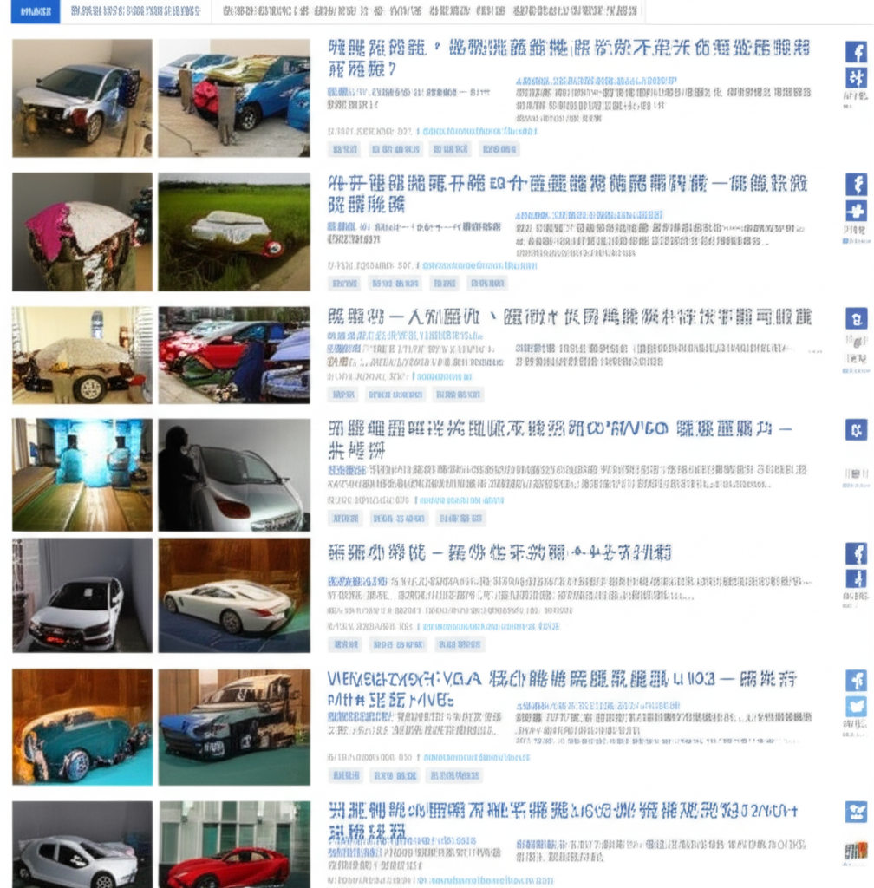

# 減重與科技新聞速覽：2025年6月16日
## 引言
今天的新聞重點涵蓋了減重、科技發展以及國際事件。從台灣肥胖率飆升、瘦瘦針的風險，到中國商飛C919的進展和伊朗油庫遭襲，各個領域都有值得關注的資訊。本文將整理今日重要新聞，提供快速且全面的概覽。
## 主體內容
### 第一點：減重與健康議題
減重仍然是熱門話題，聯合新聞網指出台灣肥胖率飆破50%，營養師點出「現代人變胖4大元兇」。NOW健康報導研究顯示「睡得飽、早餐吃蛋」是減重的兩大關鍵。然而，瘦瘦針的使用也引發關注，健康新聞指出，即使打了瘦瘦針，若不改變生活習慣，體重仍會復胖，Yahoo新聞則警告瘦瘦針可能增加胰臟炎風險。嘉興發布了體重管理的“官方指南”，顯示出體重管理日益受到重視。中華民國肥胖研究學會也持續推廣相關知識。
### 第二點：科技與商業發展
TechNews科技新報關注資訊科技、能源、半導體、行動運算、網際網路、醫療、生物科技等產業的趨勢、內幕與新聞。INSIDE則聚焦社群媒體、行動網路、行銷、技術、創業等領域。這些報導反映了科技產業的快速發展，以及企業在AI領域的積極投入。
### 第三點：國際事件
中國商飛C919的發展持續受到關注，維基百科上的資料顯示該機型已獲得大量訂單。另外，微博上的消息指出，伊朗首都德黑蘭附近的沙赫蘭油庫遭到以軍襲擊並起火，但火勢已得到控制。
## 結論
今天的新聞內容豐富多元，從健康、科技到國際情勢，各個領域都充滿了變化和挑戰。對於減重議題，除了尋求快速解決方案外，更應注重生活習慣的改變。在科技領域，持續關注產業趨勢和創新技術至關重要。而國際事件則提醒我們，世界局勢複雜多變，需要時刻保持警惕。